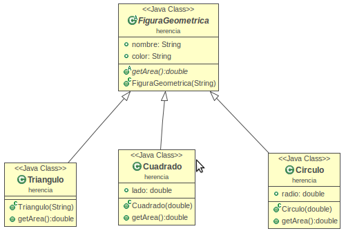

Conceptos fundamentales
-
Clase
Definiciones de las propiedades y comportamiento de un tipo de objeto concreto.
La instanciación es la lectura de estas definiciones y la creación de un objeto a partir de ellas.
-
Objeto
Entidad provista de un conjunto de propiedades o atributos (datos) y de comportamiento o funcionalidad (métodos), los mismos que consecuentemente reaccionan a eventos.
Se corresponden con los objetos reales del mundo que nos rodea, o con objetos internos del sistema (del programa).
Es una instancia a una clase.
-
Propiedad o atributo
Contenedor de un tipo de datos asociados a un objeto (o a una clase de objetos), que hace los datos visibles desde fuera del objeto y esto se define como sus características predeterminadas, y cuyo valor puede ser alterado por la ejecución de algún método.
Conceptos fundamentales
-
Método
Algoritmo asociado a un objeto (o a una clase de objetos), cuya ejecución se desencadena tras la recepción de un "mensaje". Desde el punto de vista del comportamiento, es lo que el objeto puede hacer. Un método puede producir un cambio en las propiedades del objeto, o la generación de un "evento" con un nuevo mensaje para otro objeto del sistema.
-
Identidad
La identidad es la propiedad que permite a un objeto diferenciarse de otros. Generalmente esta propiedad es tal, que da nombre al objeto.
En programación la identidad de los objetos sirve para comparar si dos objetos son iguales o no. No es raro encontrar que en muchos lenguajes de programación la identidad de un objeto esté determinada por la dirección de memoria de la computadora en la que se encuentra el objeto, pero este comportamiento puede ser variado redefiniendo la identidad del objeto a otra propiedad.
-
Mensaje
Una comunicación dirigida a un objeto, que le ordena que ejecute uno de sus métodos con ciertos parámetros asociados al evento que lo generó.
Conceptos fundamentales
-
Comportamiento
Una comunicación dirigida a un objeto, que le ordena que ejecute uno de sus métodos con ciertos parámetros asociados al evento que lo generó.
-
Estado
El comportamiento de un objeto está directamente relacionado con su funcionalidad y determina las operaciones que este puede realizar o a las que puede responder ante mensajes enviados por otros objetos. La funcionalidad de un objeto está determinada, primariamente, por su responsabilidad. Una de las ventajas fundamentales de la POO es la reusabilidad del código; un objeto es más fácil de reutilizarse en tanto su responsabilidad sea mejor definida y más concreta.
Relaciones
Es posible crear objetos de diferentes clases y establecer una relación entre ellos. Cuando los objetos son relacionados es posible acceder a los miembros de un objeto desde otro objeto.
Esto supone una ventaja cuando un objeto debe comenzar el procesamiento de información justo en donde otro objeto habría terminado el procesamiento.
Adicionalmente nos permite pasar información de un objeto a otro y de ahí a otro objeto de forma encadenada.
Formas de realizar la relación entre objetos:
Asociacion
-
hacer una referencia de una clase dentro de otra.
Al menos un atributo de la clase B es una referencia a la clase A.
-
No es una relación fuerte, es decir, el tiempo de vida de un objeto no depende del otro, es decir La creación de B no implica la creación de A.
Es una relación duradera
-
Es una relación duradera
Relaciones
Asociacion
-
Normalmente la conexión entre los objetos se realiza recibiendo la referencia de uno de ellos en el constructor u otro método.
-
Si la relación tiene cardinalidad superior a uno hay que usar un array o una estructura de datos dinámica.
-
La clase B usa a la clase A.
-
La asociación se podría definir como el momento en que dos objetos se unen para trabajar juntos y así, alcanzar una meta.
-
Customer es independiente de CreditCard, puesto que el cliente puede existir sin necesidad de tener asignada una tarjeta de crédito.
-
la creación de creditCard se hace afuera de la clase, puede seguir existiendo la creditCard, sin que exista el cliente.
Relaciones
Dependencia o Instanciación (uso)
-
Un objeto usa (conoce) a otro cuando puede enviarle mensajes, por ejemplo, para requerir de éste algún servicio.
-
La clase B necesita de un objeto de la clase A para llevar a caba una funcionalidad.
-
En un método de b se crea un objeto auxiliar de A o en un método de B aparece A como argumento.
-
La durabilidad es temporal.
Relaciones
Composición
-
La composición es una relación más fuerte que en asociación, y consiste en que la composición también controla los ciclos de vida de los objetos relacionados.
-
La Clase todo controla las clase parte, al crear el objeto se crean las partes y al finalizarlos se destruyen todas las partes.
-
Es una relación muy duradera.
-
No hay una implementación especial para este tipo de relaciones, se tratan como asociaciones ordinarias.
En java el que se encarga de la destrucción de los objetos es el garbaje collector.
-
Relación de composición entre humano y cerebro, muy duradera mientras exista el objeto compuesto existe el otro.
Relaciones
Diferencia entre asociación y composición
-
La diferencia con la asociación es que en la composición hacemos en algún momento la construcción de los objetos compuestos, la creación de cerebro y corazón se hace en el constructor.
-
Los objetos que componen a la clase contenedora, deben existir desde el principio.
-
No hay momento en que la clase contenedora pueda existir sin alguno de sus objetos componentes. Por lo que la existencia de estos objetos no debe ser abiertamente manipulada desde el exterior de la clase.
-
Tanto la asociación como la composición se pueden entender con la frase “tiene un”
Relaciones
Herencia
-
Los objetos heredan las propiedades y el comportamiento de todas las clases a las que pertenecen.
-
La herencia organiza y facilita el polimorfismo y el encapsulamiento, permitiendo a los objetos ser definidos y creados como tipos especializados de objetos preexistentes. Estos pueden compartir (y extender) su comportamiento sin tener que volver a implementarlo.
-
Esto suele hacerse habitualmente agrupando los objetos en clases y estas en árboles o enrejados que reflejan un comportamiento común. Cuando un objeto hereda de más de una clase se dice que hay herencia múltiple.
-
La herencia se puede entender como es “es un”
Relaciones
Herencia

-
la clase Cuadrado es una figura geométrica.
-
la clase Cuadrado "es una" figura geométrica.
Conceptos fundamentales
Delegación
-
En ocasiones, para lograr flexibilidad de diseño, un objeto es implementado de forma tal que este delegue parte de su funcionalidad en otro objeto.
-
Esto es muy común en aplicaciones que hacen uso de interfaces gráficas de usuario, en las que los controles gráficos generales delegan la acción que se ejecutará ante determinado estímulo en otro objeto.
Polimorfismo
-
Se refiere a la habilidad de objetos de distintas clases de responder al mismo mensaje.
-
Esto se puede conseguir a través de la herencia: un objeto de una clase derivada es al mismo tiempo un objeto de la clase padre, de forma que allí donde se requiere un objeto de la clase padre también se puede utilizar uno de la clase hija.
Conceptos fundamentales
Polimorfismo
-
Upcasting: un atributo que es declarado como uno de una clase padre dentro de una jerarquía de clases va a responder a todos los métodos del padre aunque no se sepa que tipo concreto va a instanciar.
-
Aca si bien es una asignación polimórfica se esta decidiendo en tiempo de compilación
-
Se decide en tiempo de ejecución cual es la clase hija que va a ser instanciar.
No se si figura geométrica va a ser un Triángulo o un Cuadrado hasta que no ejecute el programa.
Conceptos fundamentales
Polimorfismo
-
downcasting: un atributo está declarado como una clase padre dentro de una jerarquía pero le específico que hijo esta instanciado.
Nos movemos en sentido descendente en una jerarquía y en java se especifica el tipo entre paréntesis.
-
Una vez hecho el casteo se puede acceder a los métodos o atributos propios de la clase hija.
Conceptos fundamentales
Polimorfismo
-
En ocasiones también se utiliza el término polimorfismo para referirse a la sobrecarga de métodos, término que se define como la capacidad del lenguaje de determinar qué método ejecutar de entre varios métodos con igual nombre según el tipo o número de los parámetros que se le pasa.
-
Los métodos se llaman exactamente igual pero se va a ejecutar el código de acuerdo a la clase del objeto que use al momento de la invocación.
Conceptos fundamentales
Polimorfismo
-
Aclaración: En Python no existe sobrecarga de métodos (el último método sobre escribiría la implementación de los anteriores).
-
Python, al ser de tipado dinámico no impone restricciones a los tipos que se le pueden pasar a una función, por ejemplo, más allá de que el objeto se comporte como se espera: si se va a llamar a un método f del objeto pasado como parámetro, por ejemplo, evidentemente el objeto tendrá que contar con ese método. Por ese motivo, a diferencia de lenguajes de tipado estático como Java o C++, el polimorfismo en Python no es de gran importancia.
Extensions
Core gives you basic slide functionality with left and right arrow navigation, but you may want more. Here are the ones included in this deck:
-
deck.goto: Adds a shortcut key to jump to any slide number. Hit g, type in the slide number, and hit enter.
-
deck.hash: Enables internal linking within slides, deep linking to individual slides, and updates the address bar & a permalink anchor with each slide change.
-
deck.navigation: Adds clickable left and right buttons for the less keyboard inclined.
-
deck.status: Adds a page number indicator. (current/total)
-
deck.scale: Scales each slide to fit within the deck container using CSS Transforms for those browsers that support them.
Each extension folder in the download package contains the necessary JavaScript, CSS, and HTML files. For a complete list of extension modules included in deck.js, check out the documentation.
Nested Slides
That last slide had a few steps. To create substeps in slides, just nest them:
<section class="slide">
<h2>Extensions</h2>
<p>Core gives you basic slide functionality...</p>
<ul>
<li class="slide">
<h3>deck.goto</h3>
<p>Adds a shortcut key to jump to any slide number...</p>
</li>
<li class="slide">...</li>
<li class="slide">...</li>
<li class="slide">...</li>
</ul>
</section>
Other Elements: Images

<img src="http://placekitten.com/600/375" alt="Kitties">
Other Elements: Blockquotes
Food is an important part of a balanced diet.
Fran Lebowitz
<blockquote cite="http://example.org">
<p>Food is an important part of a balanced diet.</p>
<p><cite>Fran Lebowitz</cite></p>
</blockquote>
Other Elements: Video Embeds
Embed videos from your favorite online video service or with an HTML5 video element.
<iframe src="http://player.vimeo.com/video/1063136?title=0&byline=0&portrait=0" width="400" height="225" frameborder="0"></iframe>
Digging Deeper
If you want to learn about making your own themes, extending deck.js, and more, check out the documentation.
←
→
/
#